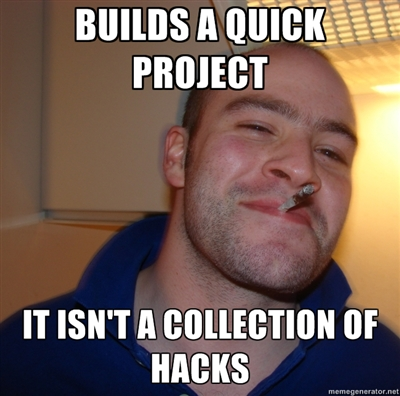

Flask: A Python Microframework
Phil Wade, Portal
Phil Wade, Portal
pwade pwade-mac .virtualenvs $ du -sh django/ 39M django/ pwade pwade-mac .virtualenvs $ du -sh flask/ 6.9M flask/

Flask gives you the tools to build a proper web application, both correctly and quickly.
Relevant links